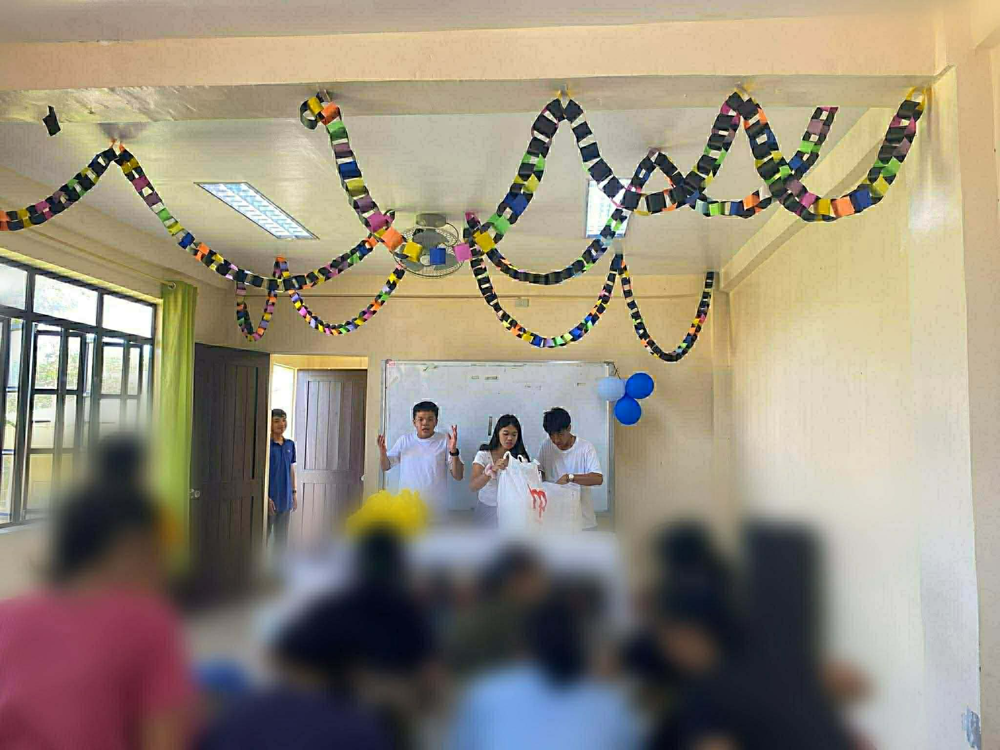
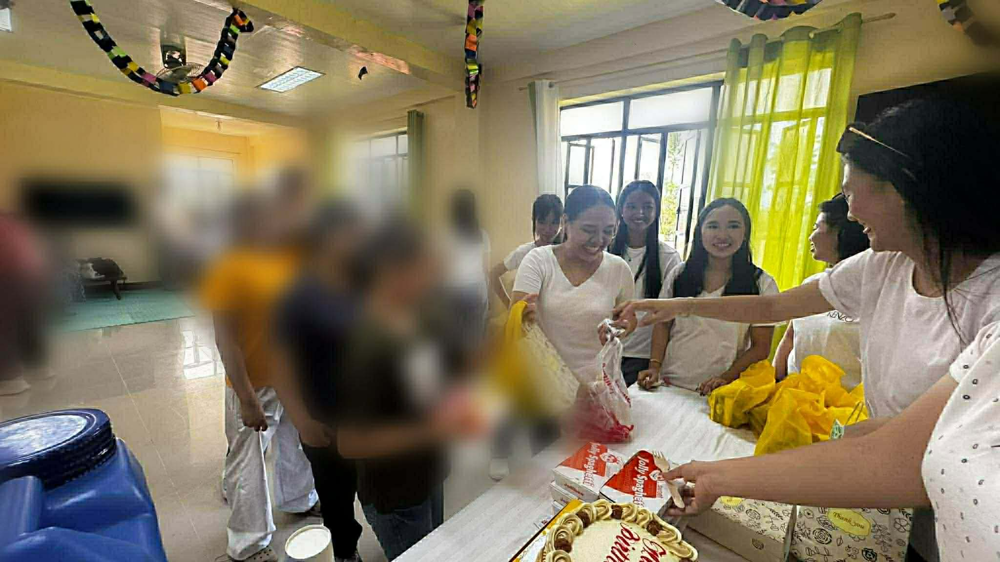

Stories that highlight human experiences, community, and society.
Finding Meaning In Society
By James De Lejos
In an evolving world, we see new faces, new inventions, and new hobbies. It is our cornerstone of development in society. Well, in your studies, what is your favorite field? Did you hear your calling to be part of that field? If not, let’s explore humanities and social science through the perspective of Hiraya.
Hiraya is a first-year political science student from the University of the Philippines - Diliman. Hiraya’s calling is to study HUMSS. For her, HUMSS is a real-life concept that can be brought outside of the classroom. It carries our oath to real-life phenomena, social issues, and human behavior, which are essential to understanding what is happening in society.
Her favorite subject is the Disciplines and Ideas in the Social Sciences (DISS) because it taught her the social science disciplines like anthropology, sociology, history, and her major, political science. Through this subject, she learned that all disciplines are connected because it is how society finds meaning. Without social science, we would struggle to understand the different perspectives that shape society today.
Another subject is its continuation, the Disciplines and Ideas in the Applied Social Sciences (DIASS). For Hiraya, DIASS is a real-life lesson since it discusses counseling and social work, professions that help improve people's lives. By applying the lessons from this subject, students can see how knowledge allows them to grow and interact meaningfully with others.
Beyond academic learning, Hiraya is involved in contemporary issues, especially feminism, which reflects her passion for uplifting women and advocating equality. She believes studying social sciences develops our responsibility as citizens. This includes civic duties, participation in society, and ethical responsibility, while also recognizing when it is necessary to question unjust systems or practices.
Hiraya’s experience as a student shows that HUMSS disciplines go beyond being academic subjects. They provide knowledge, skills, and perspectives that allow individuals to understand the world and contribute to improving it.
Students who pursue social sciences develop critical thinking, empathy, and social awareness — qualities that help them address societal issues and positively contribute to their communities.
Choosing social sciences means preparing oneself to interact with society and understand the experiences of people from different walks of life. For Hiraya, social science is not just a field of study — it is a calling to understand humanity.
Feature Story Part 2
Coloring a Brighter Future for Tomorrow
In a world where kindness often becomes the brightest color in someone’s darkest day, there lived a girl who found joy in seeing goodness in others and happiness in the simplest acts of compassion. As she grew older, she met people who shared the same dream as hers — to make a difference, even in small ways. Together, they believed that service is not just an activity, but a responsibility.

Community outreach activities allow students to bring learning beyond the classroom and into real communities.
One day, their section decided to step into a world unfamiliar to them — conducting an outreach program for a small community in need. It was beyond the four corners of their classroom. They prepared donation drives, packed school supplies, organized games, and rehearsed simple performances.
At first, they were nervous. Would their efforts be enough? Would they truly make the children smile?
But the moment they arrived and saw the bright smiles waiting for them, all doubts slowly faded away.
The outreach program was simple, yet deeply meaningful. They distributed goods, shared stories, and played games filled with laughter and excitement. The children’s smiles were genuine — the kind that warms the soul and reminds you why compassion matters.

Simple acts of kindness and service can create meaningful change in people's lives.
For the girl, it was more than just giving material things. It was about giving time, presence, and love. She realized that sometimes what people need most is not grand gestures, but sincere hearts willing to listen and care.
As the day ended, her heart felt fuller than ever before. She saw how a small effort from their section created ripples of joy in the lives of others.
The experience awakened a stronger desire within her — to continue serving, to continue reaching out, and to continue coloring the world with kindness.
She realized that outreach programs are not just school requirements. They are opportunities to grow in empathy, leadership, and social responsibility.
From that day forward, helping others was no longer just something she enjoyed — it became part of her purpose.
She realized that the future becomes brighter not because of grand achievements alone, but because of collective compassion.
Through simple acts of service, she found her calling: to be someone who brings light wherever she goes and inspires others to do the same.
What began as a step into unfamiliar territory became the beginning of a lifelong commitment — coloring a brighter future not only for tomorrow, but for every heart she encounters along the way.
Understanding Society Inside the Classroom
The Humanities and Social Sciences (HUMSS) play an important role in shaping professionals who work with people, communities, and social issues. One example of a HUMSS-related professional is a teacher who uses knowledge from different social science disciplines to guide students and help them understand the world around them.
A teacher from Camarines Norte College (CNC), located in Labo, Camarines Norte, shared his thoughts about their profession and the influence of this thing in his daily life and work. He said that as a licensed professional teacher, their main goal is to teach and guide them in developing self-skills, knowledge, values, and decision-making. Teaching is not only about delivering lessons but also about helping students understand social realities and become responsible members of society.
In their daily work, the teacher applies many concepts from the humanities and social sciences. For example, knowledge from psychology helps them understand students’ emotions, behaviors, and ways of thinking, especially when learners ask questions or experience academic difficulties. At the same time, sociology helps them understand how culture, beliefs, and social backgrounds influence students’ attitudes and interactions.
In addition, concepts from linguistics help them analyze language and explain ideas in a way that is easier for students to understand. Through these disciplines, the teacher can communicate effectively and provide meaningful information that supports students’ learning.
Teaching also exposes educators to a variety of social challenges. According to the teacher, they frequently encounter issues such as unequal access to education, misinformation, and misunderstandings arising from cultural differences.
Despite the importance of HUMSS subjects, some students still think that it is a boring strand. The teacher explains that this perception often comes from a lack of exposure to real-world experiences. Once students see how important HUMSS subjects are, they begin to appreciate the scope of this knowledge.
To inspire Grade 10 students who are still deciding their strand, the teacher believes that educators must expose them to real social issues and allow them to see how HUMSS subjects address real problems in society.
In summary, teaching is a profession deeply connected to the humanities and social sciences. Through disciplines such as psychology, sociology, linguistics, and philosophy, teachers can better understand people and address social issues in education.
More Than Just Theories
Livina shared that HUMSS subjects are very relevant to real life because they are not only focused on theories. According to Livina, studying HUMSS helps her better understand why people think the way they do, why social issues exist, and how culture and history influence the present.
She explained that HUMSS lessons are not limited to classroom discussions because they can be applied in everyday life, such as when communicating with others, understanding the news, and forming personal opinions about different issues.
Livina mentioned that Contemporary Arts is the most interesting subject for them because it shows how people express emotions and ideas through art, while Disciplines and Ideas in the Social Sciences (DISS) is the most challenging due to the number of concepts and theories that must be understood.
Livina also emphasized that real-life examples make social science concepts easier to understand. Stories related to discrimination, poverty, and social struggles make lessons more meaningful than memorizing definitions alone.
She is particularly interested in issues related to mental health, inequality, and youth empowerment. Livina believes many young people struggle with issues that are often unnoticed, which is why awareness and understanding are important.
According to Livina, studying HUMSS helps students become more socially responsible citizens. It encourages empathy, critical thinking, and awareness of how actions and words affect others.
She advises Junior High School students, especially Grade 10 learners, not to be afraid of choosing HUMSS if they enjoy reading, writing, expressing ideas, and understanding people. For Livina, HUMSS is not just about theories—it is about understanding society and becoming someone who can contribute to meaningful change.